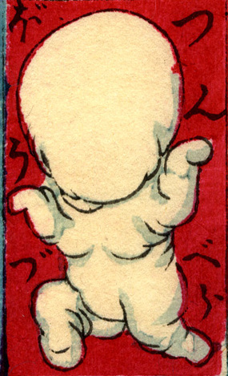

のっぺら坊；ノッペラボウ

人型の白い肉塊。頭部と思われる部分には、目や鼻などは一切無い。小さな子供が遊んでいるようにも見える。
著作者：豊貞／出典：親書誌：U426_nichibunken_0225：大新板ばけ物ずくし；オオシンバンバケモノズクシ／日付：2010／資源識別子：U426_nichibunken_0225_0017_0000
Copyright (c)2010- International Research Center for Japanese Studies, Kyoto, Japan. All rights reserved.